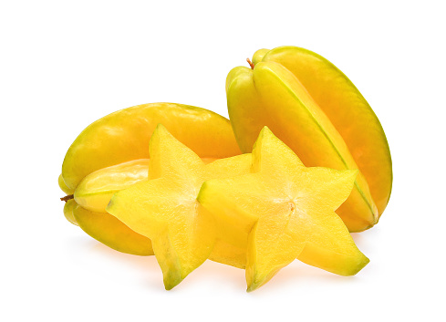
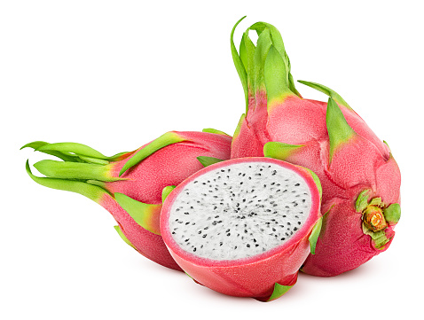
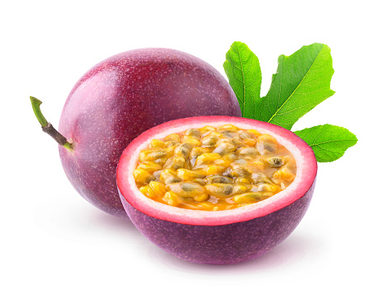

STAR FRUIT

starfruit is a sweet and sour fruit that when cut into slices, looks
like a star. the skin is edible and the flesh has a mildly sour flavor,
similar to grapes.
click for more info
DRAGON FRUIT

dragonfruit, also known as pitaya,has bright magenta skin with green
scales, gving it its awesome name. the two most popular types have
either white or magenta flesh with black seeds. taste wise, it is like a
mix of kiwi and pear.
click for more info
PASSION FRUIT

passionfruit is a small round fruit with a thick rind, containing sacs
filled with strong, sour flavor and crunchy, edible seeds. When ripe,
the outside rind turns wrinkly and is a dark purple. It's texture is
unique, but flavorwise, it tastes a bit like kiwi and pineapple.
click for more info